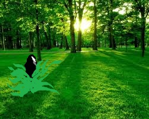

Mary And jane Go to College
Chapter 5
Scene4:The Cannon Plan

Then the morning has come Mary and Jane feel better and feel it was a beautiful day. It was a weekend so they call all their club member to look in to the woods. So everyone go to the trip to the wood. After an hour in the woods Mary discover a new plant she found in the woods it look like an orchid that they don't know so they jar it up. While walking more further Katarina smell something that is fresh inside the woods. Until Jane realize that it is the same smell of cannabis sativa. All of them got high in that place until Mary and Jane saw a big cannon in the woods. The cannon was covered up by weeds so they don't realize it yet until they got back into the University. After they got back all of them sleep inside the gym after everyone got high. Then the sun comes up they all wake up and Jane see that the date today is the day of science fair. Mary comes up with an Idea and tells it to Jane whispering.